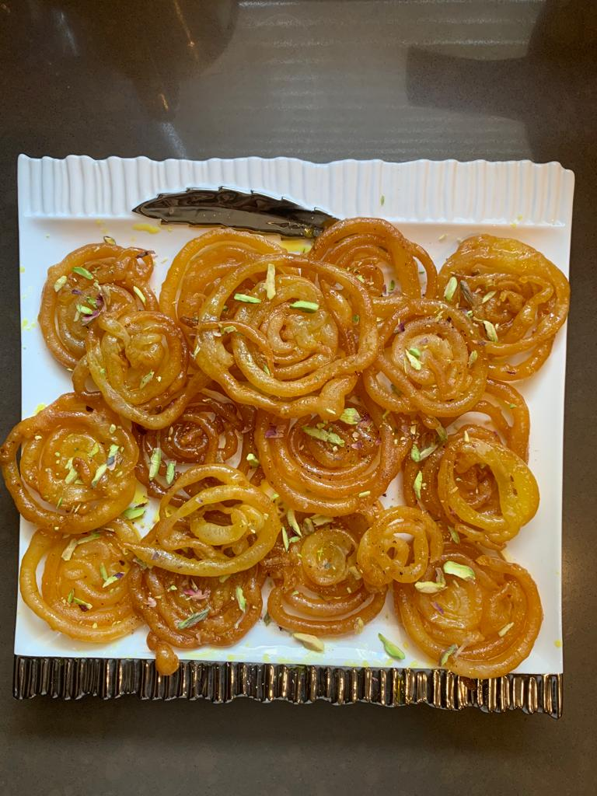

JALEBI

INGREDIENTS
- 1 Cup Sugar
- 3/4 cup water
- 1/2 lemon juice
- 1/2 tea spoon saffron strands
- 1 cup refine flour
- 1/4 cup yogurt
- 1 tea spoon vinegar
- 1/2 tea spoon baking powder
- Ghee or oil for deep frying
INSTRUCTIONS
- Add sugar and water in a pot, heat on medium flame.
- When the sugar melts, add lemon juice and keep stirring till one string consistency is achieved.
- Now add in saffron and mix well.Turn off the flame and aside till in use.
- In a mixing bowl combine refined flour,baking powder,vinegar,yogurt and mix well.Set aside for 5 to 7 min.
- Add 1/2 cup water and wisk till there are no lumps.
- Now wisk for 2 min so thwe air incorporates.
- Fill the prepared batter in piping bag or ketchup bottle.
- Heat oil for deep frying in a wide mouth pan.
- Form round whirls working closely friom outside to the center.
- Fry the jalebis till golden in colour. Remove the jalebi and immediately steep in prepared sugar syrup.
- Soak the jalebis for 3-4 min. Remove and arrange on a plate.
- Garnish with thinly chopped pistachios and almonds and serve hot.